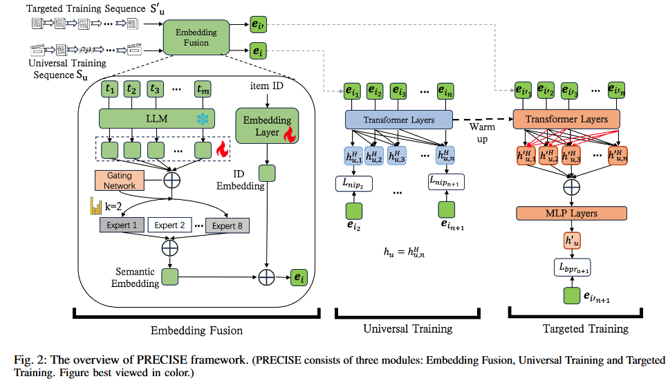
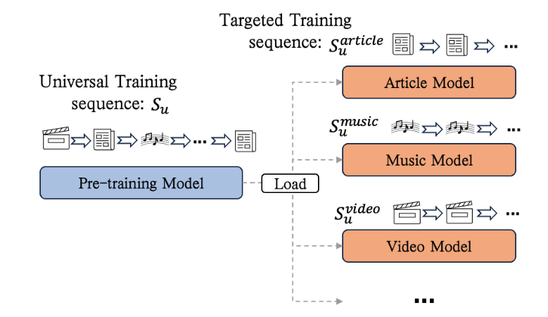

PRECISE
1.LLM4Rec中对于precise的定位
- LLM-To-Rec范式：
以推荐系统为主导, 主要使用LLM的能力做特征增强/样本增强等, 以提升推荐系统的整体效果。这种方式成本相对可控, 是工业界尝试最多也是相对比较容易拿到收益的方式。本篇内容就可以认为在做特征增强- 使用LLM做语义Embedding内容。
文章对具体item的文本描述，给到LLM得到语义Embedding的结果。
- 使用LLM做语义Embedding内容。
头部项目：热门项目，经常发生交互。
长尾项目：冷门项目，很少发生交互，传统推荐系统对长尾项目的建模不足，难以捕捉完整，因为其对应交互次数比较少。- 论文方法总结：
借助LLM，进行embedding得到语义嵌入结果。
整个模型采取了通用训练+目标训练的架构，目标训练中做了双向注意力+MLP聚合所有计算物品计算结果的改动。
同时UT 和 TT结合自身情况采取不同的损失函数。
2.摘要
工业中用户数量庞大，使用一个统一的推荐模型来满足所有场景，不切实际。
通常会为每一个scenario创建单独的推荐流程，但是这种做法导致难以全面掌握用户的兴趣。
最近研究通过预训练来解决这个问题，以封装用户的整体兴趣。
**传统推荐项目的缺陷：**利用协同信号捕捉用户兴趣，难以处理长尾项目和冷启动场景。
LLM出现后，开始研究借助LLM进行推荐，LLM推荐的挑战：高度依赖精细的特征工程，常捕捉不到协同相似性。提出PRECISE。
1.结合collaborative signals和semantic information。
2.采用学习框架，首先对user在所有推荐场景中的综合兴趣进行建模，之后专注于目标场景行为的特定兴趣。
通用训练模块 + 目标训练模块
3.引言
引言提到将LLM与推荐系统结合的领域研究主要分为三类：
- 1.将推荐任务转换为对话任务，用nature language描述，从LLM中直接获得推荐结果。
优点：利用了LLM的模型的知识。缺点：大规模工业推荐系统，难以部署和启动 - 2.提取大模型的中间
representation作为用户或者项目的补充信息，再通过网络将这个representation对齐推荐任务的representation space。
挑战：现有的研究 集中于利用LLM表示文本信息，忽视了捕捉协同信号的ID表示。
当item的文本特征缺乏，特征工程没有做好，这个方法效果不好。 - 3.模拟LLM的架构和训练方法。
构建item ID序列来模拟自然语言的token序列，然后使用因果解码器预测下一个仙姑。
但是仍然在处理长尾项目和冷启动时，表现不好。
4.相关工作
-
推荐领域的预训练
预训练推荐模型有两种：
1.利用多模态信息进行预训练。
2.涉及对于item 和 用户id 进行预训练。但是因为缺乏ID表示，所以一般都是直接再目标数据集上面进行训练。比如SASREC。与上面不一样的一点，文章提出的模型提供了多种推荐场景，
通用模块UT进行预训练，之后目标模块TT来调整参数适应具体的目标场景。 -
LLM在推荐领域的应用
就是上面引言里面的对于三种的介绍，文章此处又添加具体参考资料。
5.PRELIMINARY
有一组用户 和一组物品 ，其中 和 分别代表用户和物品的ID。
- 对于每个用户 ， 表示按时间顺序排列的历史交互物品序列，其中 表示交互物品的数量。
- 对于每个物品 ， 表示物品 描述中的文本标记，其中 是物品最大标记长度。
- 对于文章 ， 可以从文章标题和文本中提取。对于短视频 ， 可以从视频标题和标签中获取。对于直播节目 ， 代表从语音中识别的节目标题和文本。
给定用户 的行为序列 ，长度为 ，序列推荐的任务是预测用户 最有可能与之交互的下一个物品 。该问题可以形式化为
其中 是给定用户序列 的预测物品ID。
6.模型方法

6.1嵌入模块：
-
- 第一部分为对item ID进行Embedding.
- 第二部分将item的文本特征，利用LLM生成
标记嵌入。
应用MOE网络将标记嵌入提炼关键部分，加权得到最终表示。 - 第一部分和第二部分直接连接起来。
- 通用训练模块：
嵌入融合模块中的物品嵌入被输入到Transformer模型中，我们对序列中的每个物品采用下一个物品预测（NIP）损失。 - 目标训练模块：
用户的目标场景行为序列训练Transformer模型。BPR损失。
6.2嵌入融合模块
按照时间顺序排列用户u交互过的所有item，每一个item有两个特征：物品ID和对应文本。
微信里面所有的模态都可以表示为文本，比如利用OCR/语音识别等技术，所以这里对于文本的讨论其实覆盖面很广。
-
物品ID的处理：进行ID Embedding。
-
文本的处理：
利用LLM进行语义嵌入。(强调了不一定非要用LLM才可以进行嵌入，多模态的其他嵌入方法也可以)
将物品的textual tokens进行语义嵌入。形式上：公式里LLM的意思是调用LLM模型进行标记编码。
1.将语义嵌入结果输入到MOE模块，有 个专家网络，实质上是注意力模块，表示为 。每个注意力模块计算标记嵌入的加权和，将 个标记嵌入聚合为一个维度为 的嵌入，每一个注意力网络将
语义嵌入转换为维度为d的嵌入。
2.使用门控网络，计算每一个嵌入的得分/也是每一个专家的得分。 门控网络是 ，是一个可学习的线性层，输入，输出对应的K个得分。
3.选择得分最高的前k个专家激活，使用softmax计算k个专家的权重。公式表示为：4.没有被选择的专家权重设置为0。语义嵌入的最后结果为：
是由门控网络确定的专家 的权重， 是专家 的注意力函数。 -
融合两部分
讨论：
1.为什么使用MOE，而不是原始的LLM进行语义嵌入？
LLM嵌入是通用的，针对具体任务需要特定化。2.MOE的好处优势，为什么是MOE？
MoE 的作用：将通用语义映射到多个任务相关的语义子空间。每个专家（Attn_j）可以学习聚焦于一种推荐相关的语义模式（例如：专家1关注“价格敏感”，专家2关注“风格匹配”，专家3关注“品牌调性”）。
MOE可以通过多个专家并行建模不同语义视角，再加权融合，保留了语义多样性。3.为什么需要门控网络，为什么是门控网络？
因为不是所有的专家都是合理的，所以我们需要通过打分进行筛选。
门控网络作用：根据当前物品的语义内容，决定与哪些专家最相关。4.为什么一定要选择top-k?
因为不是所有expert都是有用的，需要进行筛选，topk只保留最重要的两个。(也可能三个，只是举例说明)5.为什么不是一开始就只设定两个专家？
多个expert，容易学习到对于推荐来说，有用的部分。
设定5个expert，10个expert进行学习，最后取得分最高的两个，直观感受是从10个expert里选择的两个expert应该比5个专家效果更好。
6.3 通用训练模块
模型训练的是用户的表示，训练过程中，把整个用户交互序列里的每一个物品都用上了。
-
知识讲解：
-
这部分内容讲述：训练仅解码的Transformer模型来表示每一个用户。(由于嵌入已经完成，不需要encoder的过程)
-
Transformer层：
每个Transformer层由一个掩码多头自注意力模块（MMS）和一个前馈网络（FFN）组成。
掩码多头自注意力模块借助掩码矩阵实现每个item无法关注未来的物品，具体来说掩码矩阵的下三角部分设置为0，其余部分设置为 。
-
-
公式化表述整个训练过程：
-
1.接受原始输入. Transformer 的初始输入， 是用户 的行为序列嵌入（每行是一个物品的融合嵌入，如前文 MoE + ID 所得）。
-
2.层次堆叠训练过程。每一层 Transformer Block 接收一个 的矩阵，输出也是一个的矩阵。
一共有H个Transformer层堆叠而成，每一层都包括MMS和FFN。 -
3.得到最终的用户表示。
表示Transformer模型中的第 层， 表示用户 的最终表示。它由最后一个Transformer层输出中位置 的嵌入给出。
表示Transformer模型， 是通用训练阶段的所有可训练参数。
但是在计算损失时，用户u的最终表示以及对于第i个物品的情况下用户u的表示都被使用到。
-
-
损失函数模块讲解：
给出最终Transformer块中物品 的嵌入， 是 中下一个物品的物品嵌入。
由于候选池包含很多物品，每个都用来计算损失成本太高，所以对于序列里面的每一个物品，从其他序列中采样物品作为负样本，得到负样本集，使用交叉熵损失指导模型训练。目的：最大化用户 的行为序列 中物品 的计算嵌入与物品 的物品表示的点积。
6.4 目标训练模块
-
知识讲解：
- 热启动模块：
从原来通用训练模块训练得到的参数直接复制给目标训练模块。
优势：通用训练模块已经具有语义理解能力，比随机噪声表现更好。
- 热启动模块：
-
训练过程：
-
1.热启动。从
通用训练模块中的Transformer模型热启动 中的所有参数。
将 UT 模型的所有参数（包括 Transformer 层、嵌入层等）直接复制给 TT 模型作为初始参数。 -
2.
Transformer层采用双向注意力，不使用掩码矩阵。
第一个层次的输入和通用训练模块一致：公式里面的用来区分
通用训练模块和目标训练模块。 -
3.得到用户最终表示。
为了将Transformer最后一层所有物品的嵌入都利用起来，采用连接聚合 + 多层感知机来计算最终用户表示。其中 表示Transformer模型中的第 层， 是目标场景中用户 的行为序列。 表示最终的用户嵌入，它由Transformer块后的MLP网络给出。 表示模型结构， 是目标训练阶段的所有可训练参数。
-
-
损失函数设计：
由于序列中的早期物品可以“看到”序列中的后续物品，下一物品预测（NIP）损失不能继续采用。
所以采用贝叶斯个性化排序（BPR）损失，给定长度为 的序列，仅预测第 个物品。形式上，我们有其中 是从用户序列 中计算的用户嵌入，长度为 ， 是给定用户序列后续物品的物品嵌入。
- 这里并不是标准的bpr损失，标准bpr损失应该为：
正样本：真实下一个物品
负样本：从非交互物品中采样 是 sigmoid 函数。
- 这里并不是标准的bpr损失，标准bpr损失应该为：
正样本：真实下一个物品
讨论：
1.为什么要有目标训练模块：
通用训练模块（UT）在全平台、多场景混合数据上训练，学到的是通用用户行为模式。
所以针对具体的场景而言，进行专门/单独的训练是必要的。2.
通用训练模块+目标训练模块例子：

上图展示出UT的结果可以用来进行其他多个领域的目标训练。3.为什么要采用双向注意力机制
双向注意力机制允许上下文互增强，前面的item可以看到后续的item，本身是一种互增强。
现在我们的目标变为了更好的表示用户，用于最终排序。4.采用双向注意力之后，就必须更改损失函数
i表示物品在交互序列中的位置。通用训练中计算损失时，会对所有i进行计算，第1/2/…/n个物品都会进行计算损失，分别预测对于下一个实际交互物品的打分。
而目标训练模块，由于采用了双向注意力，这样的损失函数一定不可行，因为每一个Item在训练的时候就可以看到后续物品，所以这种情况下，我们计算损失函数，只能将整个交互序列的下一个物品的打分情况纳入损失计算中。5.与UT相比TT的主要改动：
1>采用双向注意力，进行样本增强。
2>最后聚合所有物品嵌入+MLP结构得到最终用户表示。
6.5 训练策略
这部分是具体实验场景中做的一些改动
- 1.周期性热启动
预训练过程在庞大语料库中，但是推荐系统会不断产生新物品，如果仅仅热启动一次，随着时间的推移，新物品的比例会越来越多，其对应的性能表现是不好的。
对于这一问题，采取周期性热启动的策略。设定周期进行再一次的预训练。 - 2.交替训练
问题：采取相似物品，训练之后得到ID Embedding的嵌入结果计算相似度，发现大多数相似度保持在0.55左右。而文章认为：它仅略高于随机初始化ID嵌入的预期相似度0.5，表明ID嵌入经历了较小程度的更新。
对于这一问题，采取交替训练策略。我们最初固定标记嵌入，仅训练ID嵌入层。当ID表示收敛时，我们允许标记嵌入的训练。
7.模型性能
PRECISE-UT在Amazon和WeChat-AllScene数据集上均优于所有基线方法。这是因为PRECISE-UT结合了ID和文本标记嵌入以增强物品表示，而基线方法要么仅利用ID嵌入，要么仅利用文本嵌入，未探索它们的结合。我们还注意到，HLLM模型是一个强大的基线模型，表明物品可以通过文本有效表示。然而，LEARN表现不佳，这是因为它采用固定的标记嵌入，未训练标记嵌入和LLM参数。然而，HLLM和PRECISE都允许更新标记嵌入，从而能够更深入地适应协作信号引发的参数。在纯ID模型的背景下，HSTU由于其在注意力机制上的改进以适应推荐任务而表现优于SAS-Rec。然而，SAS-Rec和HSTU都未能给出最佳性能，因为它们严重依赖于ID表示，对冷门物品表现不佳。